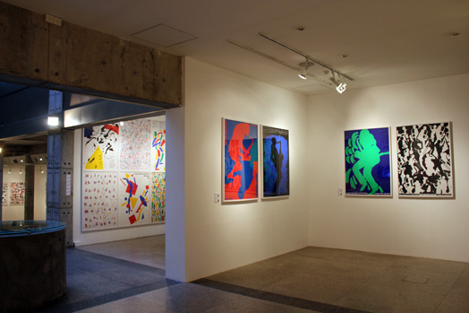
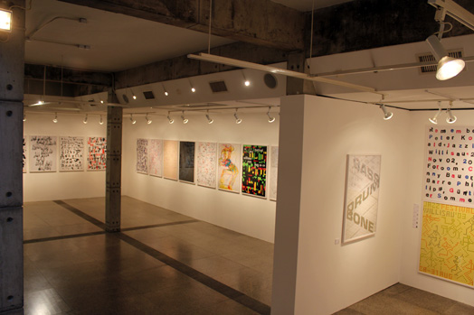
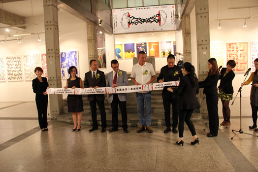
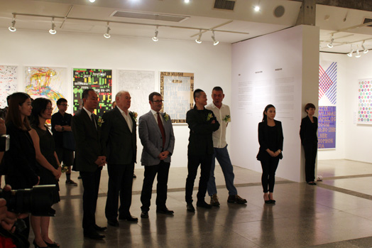
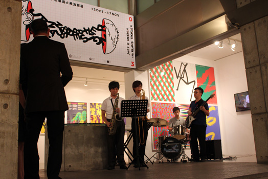
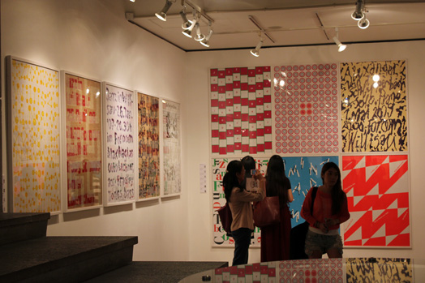
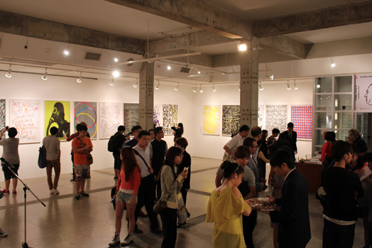
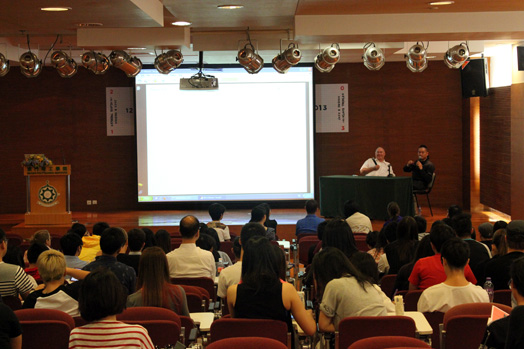
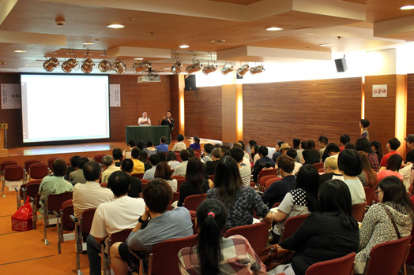

Exhibition (展覽信息) ：
City: Macau
展覽城市：澳门
Organizer: Tap Seac Gallery
主辦方：澳門塔石藝文館
Date：12th Oct. - 17th Nov.
展出時間：12/10/2013－17/11/2013
Location: Avenida Conselheiro Ferreira de Almeida, No 95
展覽地址：澳門荷蘭園大馬路95號
--------------------------------------------------------
China’s design circle has long been familiar with Niklaus Troxler’s work. A prolific artist with a career spanning over 40 years, Troxler publishes new works every year. So it is natural to say, in this era of massive information, even the less informed would have seen his art, even if they might not know him by name. In today’s design arena, a designer like Troxler will often be dubbed as ‘a master’, whereby the epithet, in preconceived understanding, is synonymous with cliché, outdated, overexposure and ‘within the system’, as the current design tastes focus in seeking novelty and fast turnaround, preferring imagery to textuality, seeking controversy through boastful remarks and pursuing instant fame, instead of making painstaking efforts to achieve something step by step, let alone pursuing a lifelong career in the art.
Now, I defy this prevalent trend to plan this exhibition of Niklaus Troxler, through which I do not mean to establish authority or doctrine, nor do I intend to make the man more famous. Living in a ‘global village’, it does not occur to me any ‘pro-western’ ideology and in fact, nowadays a design’s success is ever less related to geographical and national traits. The key to success might well be a personal formal language and aesthetics. So, what is my real intention to plan this Niklaus Troxler solo in China? I would like to introduce to a Chinese audience the artistic representation form, individuality, creative inspirational source, the musicality and other valuable features in his work, which are important contents worth probing when appreciating his designs. Yet, these are not what I most intend to highlight but rather a philosophy of ‘perseverance’, an experience featuring a slow, gradual accumulative process that I indeed want to introduce to Chinese designers. It is fair to say that a project the designer has been persisting in for 35 years has contributed to his success – this is my truly aim while curating Niklaus Troxler exhibition in China.
35 years is a long time. In my interview, to the question “What is the biggest challenge in creating this musical event?” he replied, “I would always tend to forget the obstacles in my way”. Chinese people have cultivated such philosophy of life long time ago. The well-known fable ‘Perseverance will remove mountains’ attest to this. However, since a little more than a decade ago, Chinese people started to cultivate a materialist and indulgent lifestyle quite hollow. In today’s China, most people believe that success lies in ‘a rush for riches, emulating the hectic social pace, as if there was no tomorrow.’ This way we become less serious and less patient, and thus less and less likely to create classic works, which makes our life evermore dull.
I have quoted several times from La Lenteur (Slowness), Milan Kundera’s novel in French: “Why has the interest in slow paced living disappeared? Where have those leisurely strolling people gone? And those wandering heroes celebrated by folk songs, those nomads hanging about between mills and windmills and sleeping under the stars, where have they gone? They disappeared together with the countryside paths, the grasslands and the small clearings in the forest, or with the Mother Nature?”*. Chinese aesthetician Zhu Guangqian also echoed a similar idea in one of his proses, by mentioning a wooden sign he saw in the Alps, in Switzerland, saying “Walk slowly, appreciate it”, to remind hurried travellers that one ought to slow down in order to appreciate the beauty of life. As the philosopher Marshall McLuhan says, “Art is always one technology behind”. Such materialized art is not my orientation! For I think that slowness entices thinking at ease, slowness brings elegance and nurtures art.
Niklaus Troxler has written this never-ending jazz tune of design along 35 years. It is still going on, as the artist’s daughters Paula and Annik have followed their father’s steps and they will create a new legend. As for Troxler himself, I do not need to reiterate the feeling and reaction of many viewers to his artworks, which proves that fascinating art can truly penetrate into one’s heart, shattering geographical and cultural boundaries.
Curator
He Jianping
August 2013, Berlin
有些人，在你專業生涯中，以自己的作品或專業執著，猶如導師般影響著你。我把這種人稱為“無言之師”，雖無傳授之言，但行師者之道。卓思樂於我，就是這樣的人。
2000年我在日本和他一見如故，亦師亦友。多年間，他經常來我柏林工作室小坐，我也去他家和他舉辦的爵士節玩，但更多是在世界各地遇見他。他以對設計的一貫樂觀態度，感染著我。他喜歡美酒美食，喜歡交友樂聊，無拘無束，輕鬆快樂。彷彿從來沒有雋永哲理，沒有設計嚴肅話題的他，卻35年堅持舉辦Willisau Jazzfestival，堅持這一主題的海報創作。身體力行，用執著為平面設計這個專業創造了傳奇。今日在澳門舉辦的這個卓思樂海報個展，就是從他35年爵士節海報中精選出來的百餘件作品，我把它們按時間，進行陳列。在欣賞原作的表現技法、藝術審美和創作激情之外，希望諸君思考，持之以恆進行設計創作，設計需要經歷時間的考驗和積累。
再次致謝澳門文化局，給予這個展示的機會。感謝好友吳衛鳴君支持。








